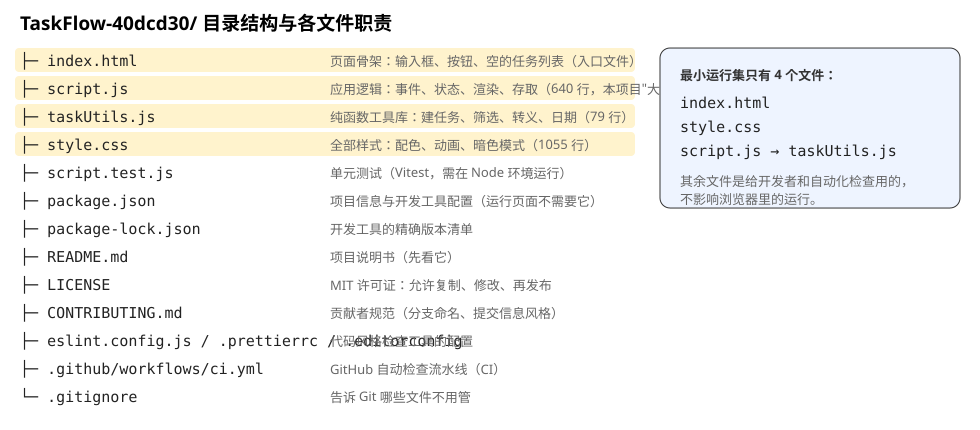
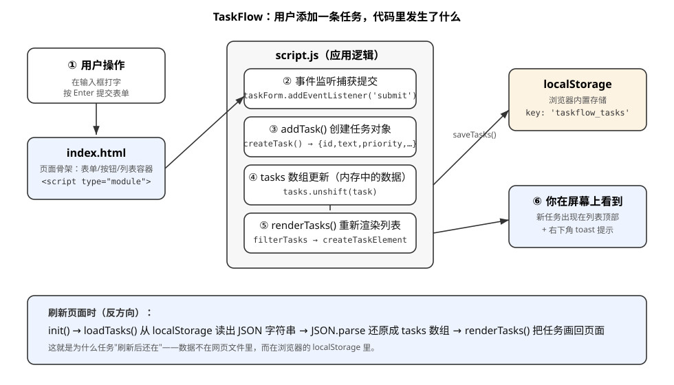

第四章：利用 AI 快速理解陌生项目#
本章约 90 分钟。方法：先自己看，再让 AI 帮你看，最后自己验证。这是全课程最核心的方法章节。
学习目标#
- 掌握"先扫目录、再找入口、顺着数据流读"的读码顺序；
- 用一个真实的用户操作（添加任务），完整追踪它在代码里的路径；
- 分清 HTML/CSS/JS 各自的职责；
- 学会"带着具体问题问 AI"，而不是把整份源码丢给它；
- 建立"AI 说的要用代码验证"的习惯。
开始前需要#
- 第三章的项目已经能在浏览器跑起来；
- VS Code 已打开项目文件夹；
- AI 聊天工具在旁边待命。
4.1 错误姿势 vs 正确姿势#
新手最常见的做法是：打开 script.js，从第一行开始逐行读，读不懂就整段贴给 AI 问"这是什么意思"。结果是：被 600 多行代码淹没，AI 回答了一屏幕，你还是不知道程序从哪开始。
读真实项目不是读课文，是查案。 正确顺序：
① 目录扫描：每个文件大概管什么（5 分钟）
② 找入口：程序从哪开始执行（10 分钟）
③ 挑一条线：只追一个操作（比如"添加任务"）从头到尾发生了什么
④ 按需补概念：遇到不认识的词，单独问 AI
4.2 第一步：目录扫描——每个文件管什么#
第二章已经看过目录结构，现在用代码视角再看一遍（看图回忆）：

真正参与运行的只有四个文件。读码策略：
index.html（278 行）——先看，它是"地图"；taskUtils.js（79 行）——短小精悍的工具函数，好读；script.js（640 行）——主体逻辑，不逐行读，只挑需要的看；style.css（1055 行）——样式，最后看，只看相关片段。
4.3 第二步：找入口——程序从哪里开始#
打开 index.html，重点看两处：
① 页面骨架（中间部分）：能看到 <form id="task-form"> 输入表单、<input id="search-input"> 搜索框、<ul id="task-list"> 空列表容器、筛选按钮等。HTML 只负责"有什么"，负责"点了会怎样"的是 JS。
② 最关键的入口（文件末尾）：
<script type="module" src="script.js"></script>
于是去看 script.js。文件顶部是一个 import 声明：
import {
generateId,
createTask,
filterTasks,
escapeHtml,
escapeAttr,
escapeRegex,
highlightSearch,
formatDueDate,
isOverdue,
} from './taskUtils.js';
——script.js 从 taskUtils.js 借来 9 个工具函数。再看 script.js 末尾，找到真正的"启动键"：
function init() {
taskForm.addEventListener('submit', handleAddTask);
// ... 一堆 addEventListener ...
loadTasks();
renderTasks();
// ...
}
init();
init() 函数做三件事：注册所有事件监听 → loadTasks() 从 localStorage 读数据 → renderTasks() 把数据显示到页面。文件最后一行 init() 一执行，应用就启动了。
方法：任何 JS 项目，先找"谁在最后被执行"。这里是 init()；别的项目可能是 main()、DOMContentLoaded、或框架的启动调用。找不到就问 AI：「这个 JS 文件的入口逻辑在哪里？请告诉我行号和函数名」——然后自己去那个行号核实。
4.4 第三步：追踪一条完整的数据流#
现在做本章最重要的练习：追踪"用户添加一条任务"这条线。把下面的图和代码对照着看：

第一站：HTML 里的表单。 index.html 中：
<form id="task-form">
<input id="task-input" type="text" placeholder="...">
...
</form>
第二站：JS 里的监听。 script.js 的 init() 里：
taskForm.addEventListener('submit', handleAddTask);
意思：表单提交（回车或点 Add 按钮）时，调用 handleAddTask。
第三站：handleAddTask 做什么。 在 script.js 里找到这个函数（用 VS Code 的 Ctrl+F 搜函数名）：
function handleAddTask(e) {
e.preventDefault(); // 阻止表单默认刷新页面
const text = taskInput.value.trim(); // 拿到输入的文字
if (!text) return; // 空输入直接忽略
// 查重……
const task = createTask(text, priority, dueDate); // 建任务对象
tasks.unshift(task); // 放进数组最前面
saveTasks(); // 存到 localStorage
renderTasks(); // 重新渲染页面
// ...
}
第四站：createTask 在 taskUtils.js 里，负责造出一个任务对象：
function createTask(text, priority, dueDate) {
return {
id: generateId(),
text: text.trim(),
completed: false,
priority,
dueDate,
createdAt: new Date().toISOString(),
};
}
记住这个对象的结构——第六章加"备注"功能时，第一件事就是给它加一个字段。
第五站：saveTasks() 存数据。
function saveTasks() {
localStorage.setItem(STORAGE_KEY, JSON.stringify(tasks));
}
STORAGE_KEY 就是你在第三章 DevTools 里看到的 'taskflow_tasks'。JSON.stringify 把数组变成 JSON 字符串才能存进去。
第六站：renderTasks() 渲染页面。 它先调 filterTasks(tasks, filter, searchQuery) 筛出要显示的任务，再对每个任务调 createTaskElement(task) 生成一段 HTML 插进 <ul id="task-list">。
一句话总结这条线：
表单提交 → JS 事件函数 → 创建任务对象 → 加入 tasks 数组 → 写入 localStorage → 重新渲染页面。
输入 → 处理 → 存储 → 输出。 绝大多数应用都是这个套路，以后读任何项目都可以先找这四段。
4.5 现在轮到 AI 上场：带着具体问题问#
你已经自己追了一遍主线，接下来 AI 的正确用法是补细节、补概念，而不是替代你读。示范：
问概念：「e.preventDefault() 是干什么的？为什么在表单提交时要调用它？」——答案可以当场验证：注释掉这行刷新试试（表单提交会刷新页面、输入丢失）。
问关系：「在 script.js 里，filterTasks 是 taskUtils.js 提供的。请解释这个函数的三个参数分别干什么」——然后把 taskUtils.js 里的函数原文贴给它。
验证 AI：AI 说"handleAddTask 在第 X 行"？别信，自己 Ctrl+F 搜一下。AI 给的所有"事实"（行号、函数名、调用关系）都要回代码里核实。 第五章会系统讲怎么核实。
4.6 一个真实的"AI 犯错"教学案例#
以下为教学情境演示，所有代码均已用真实源码核验。
假如 AI 告诉你：「任务文字的高亮搜索是在 renderTasks 里用 highlight() 函数实现的。」
核查过程：在 script.js 搜 highlight → 没有独立定义；搜 highlightSearch → 它在 import 列表里 → 去 taskUtils.js 找到：
function highlightSearch(text, query) {
if (!query) return escapeHtml(text);
const escaped = escapeRegex(query);
return escapeHtml(text).replace(
new RegExp(`(${escaped})`, 'gi'),
'<mark class="search-highlight">$1</mark>'
);
}
真相：函数叫 highlightSearch（不是 highlight），而且它在 createTaskElement 里被调用（renderTasks 本身不直接碰高亮）。AI 说的函数名和调用位置两个都错。
教训：AI 的回答是"听起来合理"的概率文本，不是查过你的代码的结论。最快的验证手段是 Ctrl+F 搜源码：函数名对不对、在不在、谁调用它，30 秒就能查清。
4.7 小结：一张地图在脑子里#
读完本章，你应该能把 TaskFlow 在脑子里画成这样：
index.html：骨架（表单/列表容器/按钮）
↓ type="module"
script.js：大脑
├─ 状态：tasks 数组 + filter + searchQuery（都在内存里）
├─ 事件：init() 里注册的十几个监听器
├─ 渲染：renderTasks → createTaskElement → innerHTML
└─ 存储：saveTasks / loadTasks ↔ localStorage('taskflow_tasks')
taskUtils.js：工具箱（纯函数，不碰页面）
style.css：外观
常见失败及处理#
| 现象 | 处理 |
|---|---|
| 函数太多不知道从哪看 | 只追"添加任务"一条线，其余函数先当黑盒 |
| AI 解释了一大堆还是懵 | 让它"用三句话说"，或"打个比方"；还是不懂就跳过，先抓主线 |
| 分不清哪个函数在哪个文件 | 用 VS Code 全局搜索（Ctrl+Shift+F）搜函数名 |
innerHTML、模板字符串 ${} 看不懂 |
单独问 AI：「解释这段 JS 里反引号和 ${} 的用法」，这是模板字符串语法 |
本章 AI 提问示例#
- 「这是
taskUtils.js里的isOverdue函数（贴代码）。请解释它怎么判断任务过期，new Date()比较的到底是什么。」 - 「
script.js的init()里有很多addEventListener，请把它们按"表单类/按钮类/键盘类"分组列出来。」（贴 init 函数原文） - 「我想找到"拖拽排序"是在哪实现的，请告诉我应该在
script.js里搜哪些关键词。」——自己搜验证：dragstart、dragover、drop。
- 不看代码能说出"添加任务"经过哪几个函数；
- 能指出
init()、handleAddTask、createTask、saveTasks、renderTasks各自在哪个文件； - 知道任务对象的 6 个字段（id/text/completed/priority/dueDate/createdAt）；
- 能说出至少一种"验证 AI 说法"的办法（Ctrl+F 搜、跑起来试）。
对着 04-数据流图.svg，能向人完整讲一遍"添加一条任务"和"刷新页面"各自发生了什么，讲的过程中能随手打开代码指出对应函数。
上一章：第三章 ｜ 下一章：第五章：学会向 AI 提问